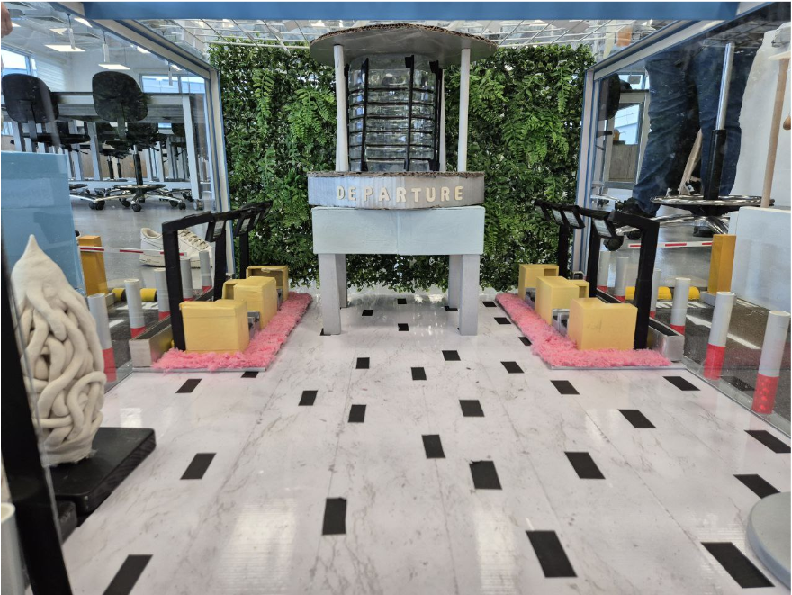

I am a Robotics Systems Engineering student at the Singapore Institute of Technology,
with a background in Computer Engineering from Temasek Polytechnic and experience as
an Air Force Technician in the Republic of Singapore Air Force.
My interests are centred around robotics, systems engineering, automation and embedded
systems. Through my studies and projects, I have gained experience with C, C++, Python,
ROS, Linux, Gazebo, SolidWorks and embedded systems.
I enjoy working on multidisciplinary engineering projects that combine software,
electronics and mechanical systems to solve practical problems.
Robotics
Systems Engineering
ROS
Embedded Systems
C++
Python
Linux
Gazebo
SolidWorks

Autonomous LIMO Robot
Developed a ROS-based autonomous LIMO robot to navigate a simulated
indoor environment representing Changi Airport Terminal 3.
• Built and configured the ROS1 system, including nodes, topics,
transforms and navigation components.
• Implemented SLAM using GMapping and Cartographer to construct
maps from LiDAR and odometry data.
• Integrated AMCL for real-time robot localisation within generated maps.
• Configured global and local path planning using move_base,
including costmaps and dynamic obstacle avoidance.
• Used TF2 to manage coordinate-frame relationships and verify
robot and sensor transforms.
• Integrated Gazebo and RViz for simulation, visualisation,
testing and debugging.
ROS1
SLAM
GMapping
Cartographer
AMCL
Navigation
Path Planning
LiDAR
TF2
Gazebo
RViz
Linux

T3 Autonomous Navigation Arena
Designed and fabricated a scaled representation of Changi Airport
Terminal 3 as a test environment for autonomous LIMO robot navigation.
• Designed the arena to support both outdoor and indoor navigation,
including a terminal structure, entrance/exit, navigation checkpoints
and environmental obstacles.
• Fabricated architectural features and obstacles using acrylic,
3D-printed components, wood, cardboard, PVC and modelling materials.
• Designed and positioned obstacles such as humps, boundary barriers
and a static gantry to test path planning, obstacle detection and
robot motion stability.
• Considered LiDAR detection, structural dimensions and sensor
interference when designing the arena.
• Designed the environment to provide realistic navigation challenges
for autonomous robot testing.
Robotics
Autonomous Navigation
ROS1
LiDAR
Path Planning
Obstacle Avoidance
SolidWorks
3D Printing
Fabrication
System Testing


{kind=link}